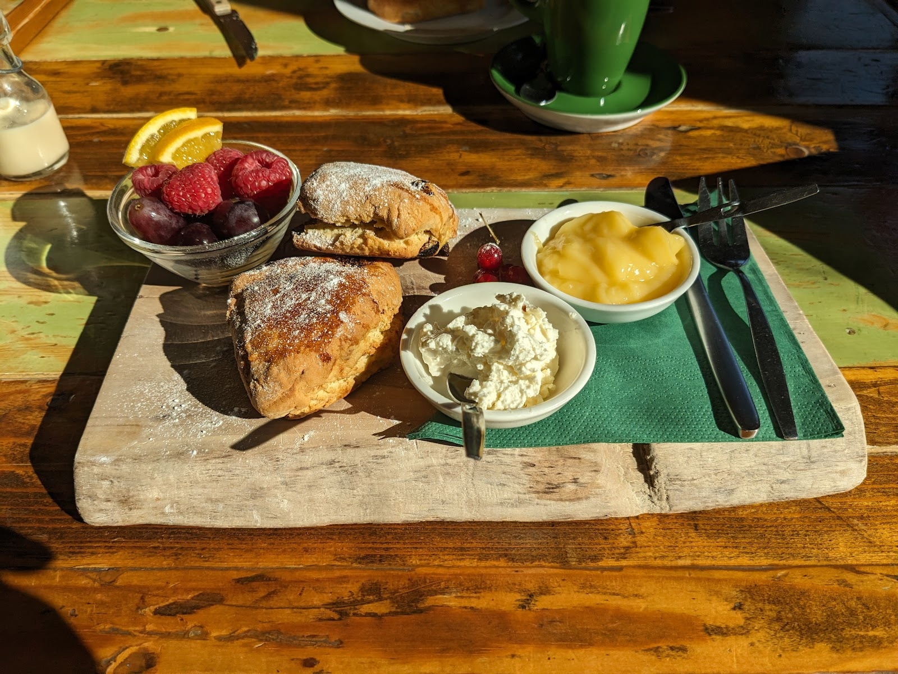
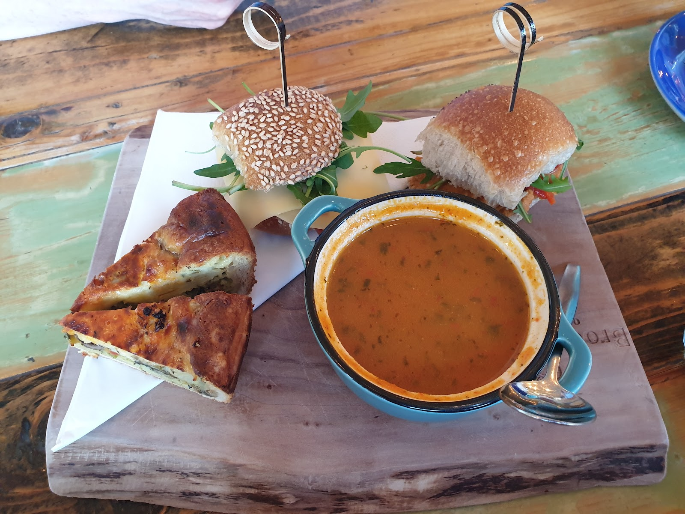
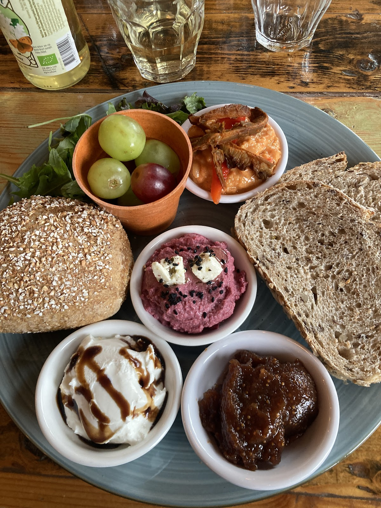
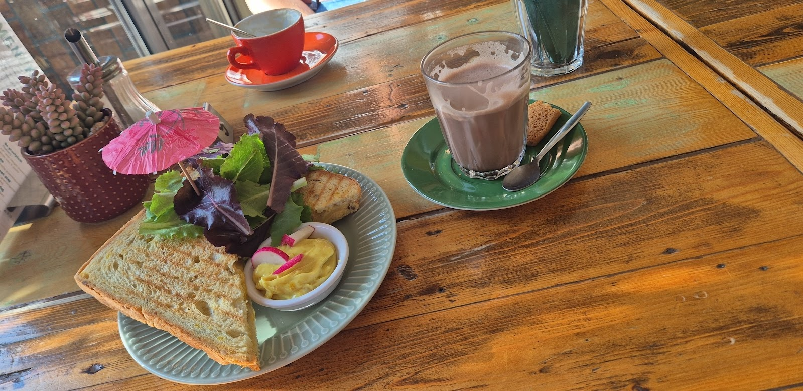
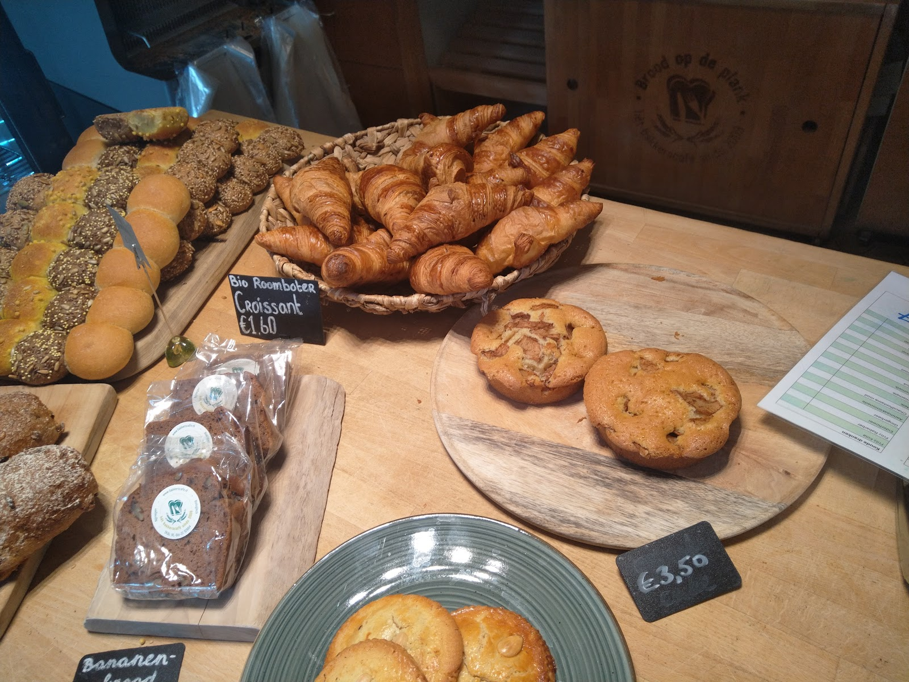
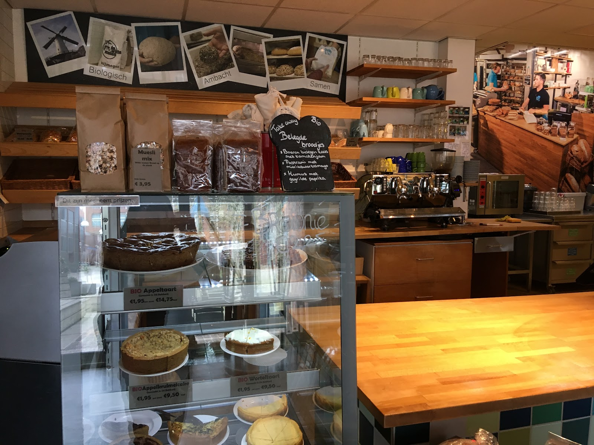
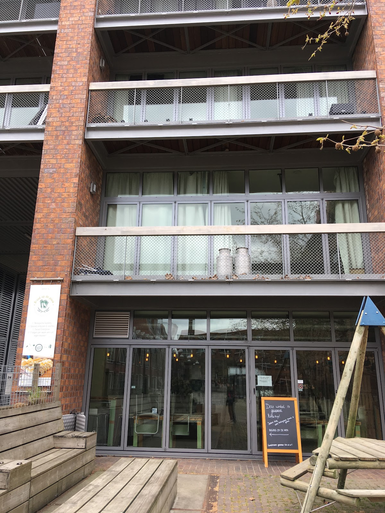

Bakkerscafé aan het Dobbelmanplein, Nijmegen
Brood op de plank
Biologisch brood uit onze eigen bakkerij, soep en beleg uit onze eigen keuken, en een lunchroom waar de zon door de ramen schijnt. Iedereen is welkom, niks moet.
Adres
Castellastraat 29
6512 EV Nijmegen
Open
Ma t/m za 08:30 tot 17:00
Zondag 09:30 tot 15:30

Uit eigen keuken, op de plank
In onze keuken roeren we elke dag in de potten en pannen. Verse soep, belegsoorten, sauzen, chutney's en andere lekkernijen maken we zelf. Het brood komt uit onze eigen biologische bakkerij.
Daarnaast werken we met lokale leveranciers van biologische vleeswaren, boerenkazen en bijzondere vruchtensappen. We schenken fairtrade koffie van Coffyn en thee van Het Theezaakje.
- Ontbijt en lunch
- Aan tafel of aan het plein
- Meenemen
- Belegde broodjes om mee te nemen
- Vegan Friendly
- Gecertificeerd door veganfriendly.nl
- Reserveren
- 024 848 8560



Lunchen met een groep?
Bent u met meer dan 8 personen, dan stellen we graag samen met u een passend aanbod samen.


Elke ochtend vers, per fiets en rolstoel
Onze bakkerswinkel wordt elke morgen door onze eigen fiets- en rolstoelkoeriers voorzien van krakend vers biologisch brood en banket uit Dé Bakkerij, onze bakkerij aan de Hatertseweg.
Daar wordt het deeg meermalen gekneed, mag het lang rusten en rijzen en wordt het knapperig afgebakken. Het biologische meel is gemalen op de molenstenen van de Witte Molen, aangedreven door Nijmeegse wind. We houden het assortiment bewust klein, voor de kwaliteit.
Hét Bakkerscafé is SKAL gecertificeerd.
Het kan wél.
Dat is ons motto. Brood op de Plank is onderdeel van hét Bakkerscafé, een social enterprise in Nijmegen. In de bakkerij, de winkel, de keuken en de lunchroom werken vakmensen samen met een zeer divers team, aan mooie producten en aan ieders eigen ontwikkeling.
We bieden ontwikkeltrajecten binnen WLZ, WMO en Participatiewet. Gastvrijheid en plezier in het werk zijn voor ons een doel op zich.
Meer weten over trajecten? trajecten@bakkerscafe.nl
"We hebben heerlijk koffie gedronken met een notentaartje op het prachtige terras en werden heel vriendelijk geholpen door een mevrouw in een rolstoel die ontzettend veel positiviteit uitstraalde. We werden er helemaal blij van."
Neem de kinderen gerust mee
Voor onze kleine gasten staat er een speciale kinderkast met kleurplaten en speelgoed. En het autovrije plein voor de deur is gemáákt voor tikkertje en sneeuwpoppen.
Brood voor uw kantoor of zaak
Ons biologische brood gaat ook naar horeca in Nijmegen. Voor bakkerijbestellingen belt u met Brood op de Plank of met Dé Bakkerij.
Wat gasten zeggen
4,5 uit 183 reviews op Google
"Beste desem volkorenbrood van Nijmegen!"
"Gastvrij personeel, lekker geluncht. Eén klein puntje, vanaf de weg (kant Graafseweg) zie je niet waar de ingang is, dus wellicht een bordje met pijl."
"Bij binnenkomst vriendelijk verwelkomt met de vraag hoe het met mij gaat, een compliment over mijn nagels en heerlijke koffie 10/10 zou ik er nog een keer heen gaan"
"Heerlijk biologisch brood, super sfeer... Je kunt er een heerlijk kopje koffie drinken een broodje eten of lunchen Etc...."
"Fijne plek. Lekker eten, heerlijk brood"
"Geweldige mensen, geweldige producten, en weer heerlijk gegeten."

Zo ziet onze gevel eruit, aan het autovrije plein van de oude Dobbelmanfabriek.
Kom langs
U kijkt uit op het plein waar de schoorsteen van de oude Dobbelmanfabriek nog trots omhoog reikt.
Brood op de Plank
Castellastraat 29
6512 EV Nijmegen
024 848 8560
post@bakkerscafe.nl
Openingstijden
- Maandag08:30 - 17:00
- Dinsdag08:30 - 17:00
- Woensdag08:30 - 17:00
- Donderdag08:30 - 17:00
- Vrijdag08:30 - 17:00
- Zaterdag08:30 - 17:00
- Zondag09:30 - 15:30
Feestdagen gesloten.
Ook bij Dé Bakkerij
Onze open bakkerij met bakkerswinkel in De Houtwerf, Hatertseweg 23C. Daar rollen de broden en taarten zo uit de oven in het schap. Maandag t/m vrijdag 08:30 tot 16:00, zaterdag 08:30 tot 15:30. 024 204 9036